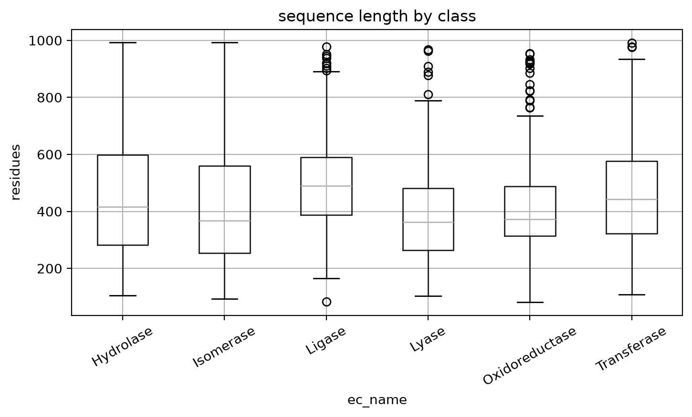

<section id="lengths" style="background:#FFFFFF;color:#2D3340;font-family:'Source Sans 3', Arial, sans-serif;padding:96px 128px;display:flex;flex-direction:row;align-items:center;gap:64px">

<div style="flex:1;display:flex;flex-direction:column;gap:32px">
<h2 style="font-family:'Source Sans 3', Arial, sans-serif;font-weight:700;line-height:1.1;color:#002060;font-size:44px">Meet the data</h2>
<p style="font-size:32px;line-height:1.4">Sequence length by class. Always look at the data before modelling.</p>
</div>
<aside>Exercise B1.1: print one example sequence and its protein name; how many proteins come from the largest family, and which is it?</aside>
</section>
